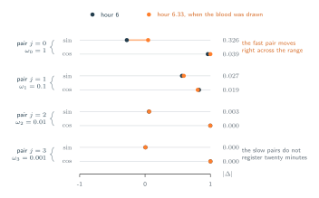
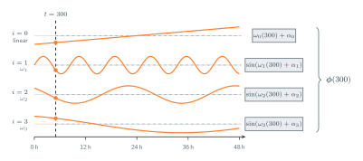
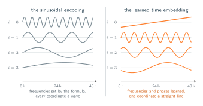
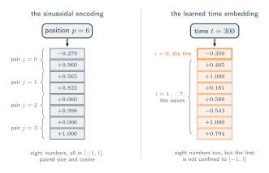

09 · Attention Over Time
Embedding Continuous Time
A positional encoding that accepts any real $t$.
The sinusoidal positional encoding method represents a specific position using a collection of distinct wave functions. The resulting coordinates are generated in corresponding pairs, with each pair $j$ operating at its own unique frequency $\omega_j$. The definition is as follows:
The resulting output from these equations is a continuous vector representation. Given a model with a width of $d_{\text{model}}$, the positional encoding translates a single sequential position into exactly $d_{\text{model}}$ numerical values. These values are structured as $d_{\text{model}}/2$ distinct pairs, where each pair $j$ is governed by a specific frequency defined by the equation $\omega_j = 10000^{-2j/d_{\text{model}}}$. This particular formulation effectively distributes the frequencies across a wide range of scales. Consequently, this approach provides the foundation necessary to represent time as a continuous real variable $t \in \mathbb{R}$ instead of relying on a strict integer-based sequence.
Now consider what that would mean for our patient example. With $d_{\text{model}} = 8$ the encoding returns eight numbers for any position it is given, so here is what it returns for hour 6, a position on the grid, beside what it returns for hour 6.33, the moment the blood was actually drawn:
- Pair $j = 0$, $\omega_0 = 1$: $(-0.279,\, +0.960)$ at hour 6, against $(+0.047,\, +0.999)$ at hour 6.33. The fastest pair turns far enough in twenty minutes to move a long way.
- Pair $j = 1$, $\omega_1 = 0.1$: $(+0.565,\, +0.825)$ against $(+0.592,\, +0.806)$. A tenth of the rotation, so a much smaller step.
- Pair $j = 2$, $\omega_2 = 0.01$: $(+0.060,\, +0.998)$ against $(+0.063,\, +0.998)$. Almost nothing.
- Pair $j = 3$, $\omega_3 = 0.001$: $(+0.006,\, +1.000)$ in both. Nothing at all at this resolution.
The calculation successfully generates two distinct vectors for two unique positions without ever requiring the fractional input of 6.33 to be an integer. The frequency pairs also effectively distribute the representational workload exactly as designed. The highest frequency pair is sensitive enough to capture a small twenty-minute variation. Meanwhile, the lower frequency pairs remain unaffected by these minor changes and instead maintain the broader temporal context across the entire two-day period (48h).

This approach still relies heavily on concepts borrowed directly from natural language processing. The specific frequencies, denoted as $\omega_j$, were originally designed for the standard Transformer architecture to track word positions within sentences rather than to monitor time series that fluctuate through time, such as clinical patient data. Consequently, these frequencies are distributed geometrically across a range that completely ignores real-world temporal dynamics, including specific clinical realities like medication schedules and daily temperature shifts.
Furthermore, because every coordinate functions as a repeating wave, the encoding only captures cyclical patterns and fails to represent the straightforward linear progression of time. Every coordinate is a sine or a cosine, so every coordinate is trapped in $[-1, 1]$ and returns to each of its values again and again, once every time its argument advances by $2\pi$. Nothing in the vector grows with $t$. So the encoding cannot report how far through the record a moment is, only where it sits within each of a fixed set of rhythms, and two moments an arbitrary distance apart can be placed arbitrarily close together. Minute 40 and minute 2920 are 48 hours apart, and no coordinate of the encoding carries a value that reflects that.
Fortunately, both of these limitations are easy to resolve. We can allow the model to learn the required frequencies and phases during training instead of keeping them fixed, and we can assign one distinct coordinate to represent a continuous linear trajectory.
The Learned Time Embedding
A bank of learned sines alongside one linear coordinate was proposed as a general representation of time by Time2Vec. Formally,
Term by term:
- $t$ is a time, in minutes, and any real one will do. It is not an index and there is no list it has to belong to.
- $d_r$ is the width of the embedding, so $\boldsymbol{\phi}(t)$ is a vector of $d_r$ numbers, one per coordinate $m$.
- $\omega_m$ and $\alpha_m$ are learned, a frequency and a phase per coordinate. The model discovers which timescales matter rather than inheriting them from a formula written for sentences.
- Coordinate $m = 0$ is the linear term, the one that is not a wave. It grows with $t$ and never returns, which is what lets the embedding distinguish early from late rather than only recognising a rhythm.

So hand it the timestamp. Write $\boldsymbol{\phi}(t)$ for the same encoding evaluated at a real time rather than an index, so that the window beginning at minute 300 carries $\boldsymbol{\phi}(300)$ and the lactate drawn at minute 2650 carries $\boldsymbol{\phi}(2650)$. Every complaint in section 06 closes at once. Two observations 340 minutes apart now differ by 340 minutes' worth of turning, whatever their positions in the list, and the encoding can no longer be made to say adjacent about a pair that is not.
Comparing the two methods
Set the two methods side by side as the figure below shows . On the left, every coordinate is a wave and the rate of each one was decided before any data arrived, so the model reads a patient through timescales borrowed from sentences. On the right, the rates and offsets are fitted to whatever actually matters in the record. Look at the straight line at the top right. It never repeats a value, that is what lets the embedding tell minute 2920 apart from minute 40.

What an embedding of time has to carry
A moment in a record has two things worth knowing about it: where it sits in a rhythm, and how far into the record it is. Waves answer the first and can never answer the second, because they always come back. A straight line answers the second and knows nothing of the first.
Both of them take one number and return a vector. Neither of them ever sees a measurement, for instance, the pulse of 78 recorded at minute 300 plays no part in $\boldsymbol{\phi}(300)$, and would not change a single entry of it. What goes in is the moment; what comes out is a description of that moment.
